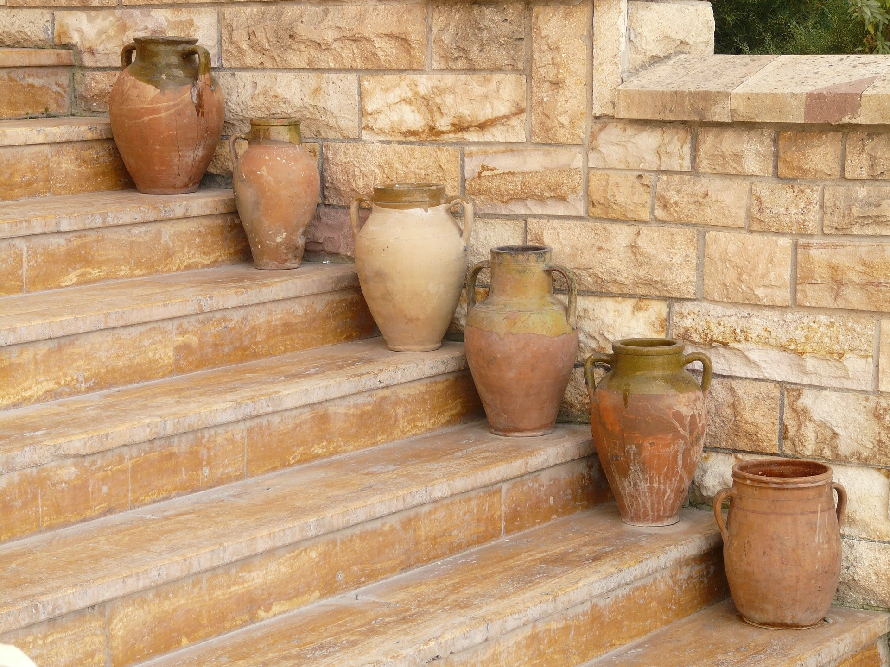

人は満たされなかった願望に縛られ続ける。
手に入る時に手にしなければ、
求めても叶わなくなった願いでも、
永遠に求め続けることになる。

恋愛経験のない人は、結婚の前に、恋愛を求める。
子を作る年齢になっても、求めるのはまず恋愛だ。
恋愛を通り越して子どもを先に求めたように見える人は、恋愛以前に執着があった。
親の離婚や死別などで“家族”について満たされていなかったためだ。
いずれにしても順を追ってしか求めることができない。
一段飛ばしに願いを叶えたとしても、
いつか欠如した経験についての意識に支配されることになる。
子どもの頃はキャビアが食べたかった。
それはまだ経験したことのないことであって、
経験しておきたいことだった。
欲望はそういった小さなカテゴリに分けられる。
年を重ねるにつれ、乾いていた煩悩が一つ一つ満たされていく。
全ての煩悩を満たした時、
人は新たな段階に達し、
煩悩を捨てられる状態になる。
今私は自分だけで出歩くことにも楽しみを感じなくなった。
街に出て、服を買いレストランで食事を取ることに、昔ほどの欲望を感じない。
それはそれらの煩悩について満たされているからだ。
今私が、外出して楽しいと感じるのは、猫が一緒のときである。
閉じ込められた猫は毎日窓から景色を眺めるだけ。
この煩悩について私は猫のものを借りている。
彼を満たすことにより、私も満たされる。
もし彼が一緒にいなかったら、
散歩するという行為に何の喜びも感じないだろう。
自分の煩悩が全て満たされたら、他人のものを借りなければならない。
子どもを作るべきはそういうときだ。
子どもはまっさらだ。何一つ満たされていない。
人は子どもの喜びを通しもう一度生き直すことができる。
利己的人生から利他的人生への転換は道理にかなって起こるものだ。
強要されるものではない。禁欲は逆効果になる。
煩悩は満たして捨てるもの。
清く生きたいと願うなら、
いつか捨てるために、今は満たしておいた方がいい。